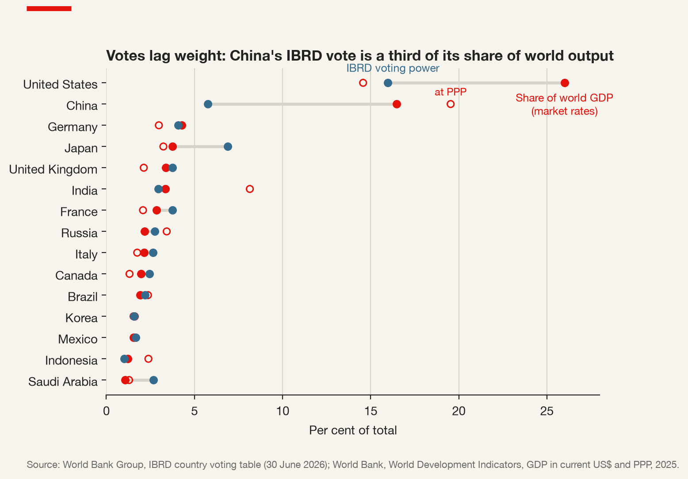
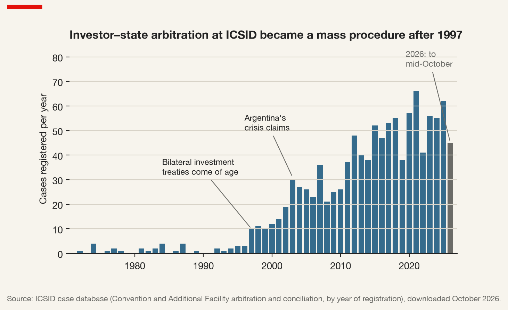
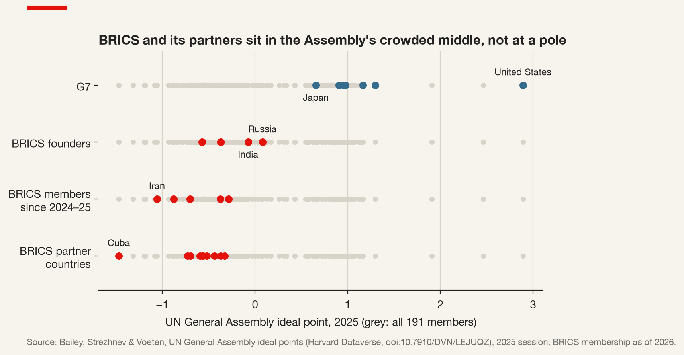
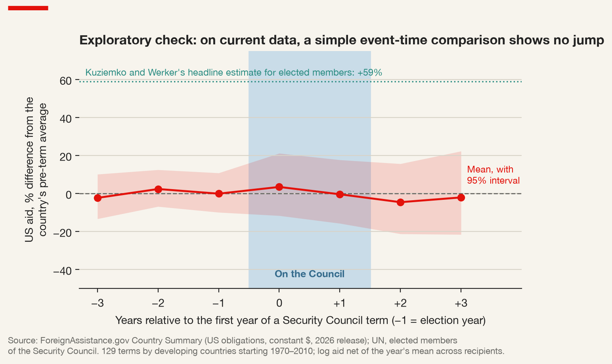

5 International Institutions: Who Finances, Insures and Referees the Firm
5.1 A hotel in New Hampshire, and what it still decides
Ask a manager which international institutions matter to her firm and the first answer is usually the United Nations. Ask instead who lent the money for the port her goods leave from, who insured the plant her company built in a country whose currency may not be convertible next year, who will hear the case if that country’s government takes the plant, and who decided which firms were allowed to bid for the contract to build the port in the first place — and the list becomes long, specific and almost entirely economic. The World Bank, its private-sector arm, its insurer, its arbitration centre; a regional development bank in Manila, Abidjan or London; and, increasingly, a bank in Beijing or Shanghai that did not exist a little over a decade ago.
This chapter is about those institutions. It treats them in two ways at once, because a multinational has to. They are business infrastructure: sources of long-term finance, guarantees, political risk insurance, contracts and dispute settlement in exactly the markets where private finance is scarcest and political risk highest. And they are arenas of power: bodies governed by states, whose votes are unequally distributed, whose rules are bargained, and whose decisions — as the evidence later in this chapter shows — can be bought. A firm that relies on such an institution to manage its geopolitical risk is relying on a rule; it is also relying on the coalition of states that keeps the rule in force. The question that runs through the chapter is which of the two it is really relying on, institution by institution and issue by issue.
The story starts, as the order it describes did, in July 1944.
From the archive · Bretton Woods, 1944
In July 1944 delegations from forty-four countries met at a resort hotel in Bretton Woods, New Hampshire, to design the post-war monetary order. The war in Europe was not over. The two plans on the table were British and American: John Maynard Keynes proposed an International Clearing Union with its own unit of account and pressure on creditor as well as debtor countries to adjust; Harry Dexter White, for the US Treasury, proposed a more modest stabilisation fund to which members would contribute and from which they could draw. The American plan largely prevailed, for the reason a realist would give: the United States was the creditor, and the creditor wrote the rules.
The Articles of Agreement of the International Monetary Fund were adopted on 22 July 1944, alongside those of the International Bank for Reconstruction and Development, and entered into force in December 1945. The design choice that matters most for this chapter was made then and has never been reversed: each member’s quota — its subscription to the Fund — determines both how much it can borrow and how many votes it has. Money and voice were tied together from the first day. Eighty years later the argument about whether the new institutions of Asia and the BRICS complement or contest the Bretton Woods order is, at bottom, an argument about that tie.
5.2 Why would states under anarchy build institutions at all?
Chapter 3 described a system that has no government above states, and Chapter 4 a world in which trade is reorganising itself along geopolitical lines. Yet the same system is thick with institutions. Two traditions explain why, and they make opposite predictions for a firm.
The liberal institutionalist answer, given its canonical form by Keohane (1984), is functional. States that would gain from cooperation often fail to achieve it because they cannot observe each other’s behaviour, cannot make credible promises, and fear being exploited. Institutions lower the transaction costs of agreement, supply information about compliance, and lengthen the shadow of the future by turning one-off bargains into repeated games. Keohane’s point was that this logic survives the decline of the hegemon that created the institutions: once built, they are cheaper to maintain than to replace, and states keep obeying them because reneging would be costly.
The realist answer, set out most sharply by Mearsheimer (1994), is that institutions reflect the distribution of power. The strong build them to serve their interests, and when an institution’s rules collide with a powerful state’s interests, the rules give way. On this view an institution has no independent effect on behaviour; it is a stage on which power is exercised, and its apparent successes are cases in which states would have behaved the same way without it.
International institution — a persistent set of rules, usually with an organisation to administer them, that states have agreed to and that prescribes behaviour, constrains activity and shapes expectations. The economic institutions in this chapter add a balance sheet: they lend, guarantee, insure or invest, and their votes are attached to capital.
Neither account is a strawman, and a firm does not need to choose between them in general. It needs to know which institution, on which issue, behaves like which. A MIGA guarantee, an IFC loan covenant and an ICSID award are rules that have, on the whole, been honoured; the WTO’s Appellate Body is a rule whose enforcement collapsed when its most powerful member stopped appointing judges. That is an empirical question, and the rest of the chapter treats it as one.
A third idea is needed to read the last decade. Morse and Keohane (2014) observed that dissatisfied states do not only lobby inside an institution; they also go around it. They may move an issue to a different existing body — regime shifting — or build a new one — competitive regime creation. They called the result contested multilateralism.
Contested multilateralism — the use of multilateral institutions to challenge the rules, practices or missions of other multilateral institutions, either by shifting an issue to an existing alternative forum or by creating a new institution to compete with the old one (Morse and Keohane 2014).
The Asian Infrastructure Investment Bank was their leading example of the second strategy, and it is where this chapter ends up. To see why it was built, one has to start with the votes inside the institutions it was built beside.
5.3 The votes behind the money
The International Monetary Fund lends to governments, never to firms. It matters to a multinational because its programmes set the conditions in which the firm operates: whether the host currency floats, whether capital may leave, whether subsidies and public-sector wages are cut, whether the government can pay its suppliers. A country in an IMF programme has its macroeconomic policy partly written in Washington.
The Fund now has 191 members. Its governance follows the 1944 design: quotas determine votes. As of 30 April 2026 the United States held 16.49% of total voting power, Japan 6.14% and China 6.08%; the other founding BRICS each held less than 3% (International Monetary Fund 2026). Article III of the Articles requires an 85% majority of total voting power for any change in quotas, so a member holding more than 15% can block a quota reform alone — and only one member does.
Voting power and capital — in a shareholder-governed institution, a member’s votes are a function of its capital subscription (plus, usually, a small equal allocation of basic votes). Voting power is therefore a lagging indicator of economic weight: it moves only when members agree to reallocate capital, and those whose share would fall can often block the reallocation.
The lag is the hinge of this chapter. China’s economy is far larger relative to the American economy than a vote of 6.08% against 16.49% suggests, and reform has been slow. The Sixteenth General Review of Quotas, approved in December 2023, raises total quotas by half but does so equiproportionally: every member’s share stays where it was. Even that increase had not taken effect by October 2026 — the IMF had extended the deadline for members’ consents to 15 November 2026 — and the realignment of shares was left to a Seventeenth Review for which, at the time of writing, guiding principles had been endorsed but no formula agreed. The same pattern holds at the World Bank: in the IBRD the United States held 15.98% of votes, Japan 6.88% and China 5.75% as of 30 June 2026 (World Bank Group 2026).

Figure 5.1 puts the voting table beside the economic weight it is supposed to lag. Two members stand far from where votes and output would coincide, and they are the two that matter most. China produced 16.5% of world output at market rates in 2025 and 19.5% at purchasing-power parity, yet holds 5.75% of the votes — about a third of its weight on the first measure. The United States holds 15.98% of the votes against 26.0% of output at market rates, which looks like under-representation too, until one notices that at purchasing-power parity its share of output is 14.6%, below its vote. The measure of weight is not neutral: market exchange rates favour rich economies with strong currencies, purchasing-power parity favours large emerging ones, and the IMF’s quota formula blends the two with openness, variability and reserves because each member prefers the measure that flatters it. Choosing the yardstick is the first round of the bargain.
Japan holds 6.88% of IBRD votes against 3.75% of world output, Saudi Arabia 2.67% against 1.08%, France and the United Kingdom 3.75% each, above their output shares; India’s 2.95% is far below its 8.1% of output at purchasing-power parity. A realignment requires the over-represented — Saudi Arabia apart, the United States’ closest allies — to give up votes.
| Institution | United States | Japan | China | India | Russia |
|---|---|---|---|---|---|
| IBRD (lends to governments) | 15.98 | 6.88 | 5.75 | 2.95 | 2.74 |
| IDA (concessional lending) | 9.52 | 8.43 | 2.55 | 2.95 | 0.29 |
| IFC (private sector) | 16.91 | 7.03 | 2.90 | 3.95 | 3.08 |
| MIGA (political risk insurance) | 14.81 | 4.16 | 2.61 | 2.53 | 2.61 |
Table 5.1 reads the same tables across the Group, and the pattern runs against intuition: China’s voice is weakest in the institutions that deal with firms. It holds 5.75% of the votes in the IBRD, which lends to governments, but 2.90% in the IFC, which invests in companies — less than India — and 2.61% in MIGA, which insures them. The United States holds about a sixth of both. The institutions most directly in the business of a firm’s political risk are those in which the challenger’s weight is smallest. (IDA’s votes follow contributions to a fund replenished every three years; there Japan nearly matches the United States.)
Two other institutions shape the conditions of business without lending a cent. The World Trade Organization, founded in 1995 with 166 members today, holds the tariff bindings and non-discrimination rules on which a firm’s market access rests. Its Appellate Body has had no members since 30 November 2020, because appointments require consensus and the United States has withheld it; a subset of members now appeal through an interim arbitration arrangement instead. The rule still exists; whether it binds depends on which members have opted in. The OECD’s relevance is quieter. Its Arrangement on Officially Supported Export Credits, in force since 1978, limits the terms that participating governments’ export-credit agencies may offer, so that exporters compete on price and quality rather than on subsidised finance — and China is not a participant.
5.4 The World Bank Group as the firm’s toolkit
The World Bank is usually described as a development institution, which it is. For a multinational it is also five distinct services, run by five legally distinct institutions with overlapping but different memberships.
The IBRD (1944) lends to middle-income and creditworthy governments; the International Development Association (1960) gives grants and concessional credits to the poorest. Neither lends to firms. Both matter to firms because the money they lend is spent buying goods, works and services, and the World Bank’s Procurement Framework, in force since July 2016, requires that much of that buying be done through open international competition, with notices published on United Nations Development Business and the Bank’s own site. Procurement is the least glamorous business channel of the multilateral system; for an engineering, construction or equipment firm it is often the largest.
Procurement has a disciplinary side. Firms found to have engaged in fraud, corruption, collusion or coercion in Bank-financed contracts are debarred, and their names published. Since the Agreement for Mutual Enforcement of Debarment Decisions of 9 April 2010, a debarment of more than one year by the World Bank Group, the Asian Development Bank, the African Development Bank Group, the European Bank for Reconstruction and Development or the Inter-American Development Bank Group is enforced by the other four. A sanction at one bank becomes a sanction at five — which makes integrity compliance in one country a condition of market access in dozens.
The International Finance Corporation (1956) invests in the private sector directly: loans, many in local currency, equity stakes, guarantees, and the mobilisation of other investors. Its Managed Co-Lending Portfolio Program lets institutional investors — insurers, pension funds, sovereign funds — lend alongside IFC in a portfolio that mirrors its own. For a firm, IFC is a co-investor whose presence lowers the cost of other finance and signals to the host government that the project has a powerful friend.
The Multilateral Investment Guarantee Agency (1988) is the institution in this chapter most directly in the business of geopolitical risk. It insures cross-border investors and lenders against five political perils, and in fiscal year 2026 it issued a record US$10.6 billion of guarantees for sixty projects, bringing its gross exposure to US$41.4 billion (Multilateral Investment Guarantee Agency 2026). Since July 2024 the Group’s guarantee products have been brought together in a single platform housed at MIGA.
Political risk insurance — cover for a cross-border investor or lender against losses caused by government action or political violence: currency inconvertibility and transfer restriction, expropriation, war and civil disturbance, breach of contract by the host government, and non-honouring of a sovereign financial obligation. Multilateral cover adds something private cover cannot: the insurer’s shareholders include the host state.
That last clause is the deterrence argument for multilateral insurance. A host government that expropriates a MIGA-insured investor is not only in dispute with a foreign firm; it is in dispute with an agency of which it is itself a member, which will pay the claim and then seek recovery from it, and whose other members include the governments that decide its access to World Bank lending. The insurance works, in part, because the coalition behind it is large. It also means that the insurer is governed by states: in MIGA the United States held 14.81% of votes as of 30 June 2026 (World Bank Group 2026), and the cover a firm can buy reflects what that coalition is willing to underwrite.
The International Centre for Settlement of Investment Disputes (Convention in force 1966) provides the forum. A firm whose host state has consented — usually through a bilateral investment treaty — can bring a claim against the state before an arbitral tribunal rather than the state’s own courts. ICSID had registered 1,118 cases by mid-2026, and of the cases registered in fiscal year 2026 a quarter concerned oil and gas and almost a fifth mining; more than three in five were brought under bilateral investment treaties (International Centre for Settlement of Investment Disputes 2026).

The case database ICSID publishes online shows how recent this is (Figure 5.2). Counting cases under the Convention and the Additional Facility, it lists 1,115 by mid-October 2026 (the Centre’s own statistics are compiled slightly differently). For its first quarter-century the forum was nearly idle: 35 cases between 1972 and 1996, fewer than one and a half a year. The caseload then rose in steps — 18 a year on average in 1997–2006, 37 a year in 2007–2016, 54 a year in 2017–2025, with a peak of 66 in 2021 — and two-thirds of all the cases registered by the end of 2025 were registered after 2011. The timing is the signature of the treaty network: most of the investment treaties that give investors standing were signed in the 1990s.
The spikes have names. In 2003, 17 of the 30 cases registered were against Argentina, brought by investors in utilities and energy whose tariffs had been frozen and converted into devalued pesos during the crisis of 2001–2002. In 2011 and 2012, 19 of 85 were against Venezuela, as its expropriations reached the forum before its denunciation took effect. In 2015, 15 of the 52 cases were against Spain, brought by investors in renewable energy after the government cut the subsidies that had attracted them — claims made under the Energy Charter Treaty, by European investors against a European state. The last episode is the corrective: the forum protects whoever holds a treaty against whichever state signed one, rich states included. Several European Union members, and then the Union itself, have since left the Energy Charter Treaty — states leaving a rule when it began to bind them.
| Respondent state | Cases | First registered | Latest registered | Pending |
|---|---|---|---|---|
| Argentina | 61 | 1997 | 2026 | 8 |
| Venezuela | 56 | 2000 | 2025 | 7 |
| Mexico | 51 | 1997 | 2026 | 18 |
| Peru | 46 | 1998 | 2026 | 21 |
| Spain | 44 | 1997 | 2024 | 10 |
| Egypt | 38 | 1984 | 2026 | 3 |
| Colombia | 29 | 2016 | 2026 | 19 |
| Ukraine | 26 | 1998 | 2026 | 9 |
| Romania | 25 | 2001 | 2026 | 9 |
| Panama | 24 | 2006 | 2026 | 10 |
Table 5.2 lists the states most often sued. Ten states account for 36% of all cases. Six are in Latin America, which combines dense treaty networks with large mining and energy sectors. The “pending” column is the one a manager should read: Peru has 21 cases open, Colombia — whose first case came only in 2016 — 19, and Mexico 18.
Two findings temper what a firm should expect of the forum. Investors lose more often than the publicity suggests: Pelc (2017) shows that their success rate is low and that much of the litigation challenges general, non-discriminatory regulation, which tribunals are reluctant to condemn. And the forum disciplines states through reputation as well as law: Allee and Peinhardt (2011) find that countries named as respondents at ICSID receive less foreign direct investment afterwards, and less still when they lose.
Investor–state arbitration — a procedure in which a foreign investor brings a claim directly against a host state before an international tribunal, under consent given in a treaty, a contract or a national investment law. The award is binding; whether it is paid depends on the state.
The forum is a rule a state can leave. Bolivia denounced the ICSID Convention in 2007, Ecuador in 2009 and Venezuela in 2012; Ecuador rejoined in 2021, and Honduras, which gave notice in 2024, rejoined in 2026. The investor protection a firm buys when it structures an investment through a treaty jurisdiction is real, but it is protection under a regime whose membership moves with the politics of host states.
5.5 Does influence inside an institution have a price?
Everything so far assumes that the institutions apply their rules to all comers. The realist suspicion is that they do not — that the votes in the tables above are used, and that influence is traded. The sharpest test of that suspicion comes from the institution whose decisions bind every firm in the world.
The UN Security Council has fifteen members: five permanent, with a veto, and ten elected by the General Assembly for two-year terms by regional group, five each year, without immediate re-election. Before 1966 there were six elected seats. Substantive decisions need nine votes and no permanent-member veto, and measures adopted under Chapter VII of the Charter — sanctions, arms embargoes, authorisations of force — bind every member state, and therefore every firm operating in one. The arithmetic gives the elected members leverage: the permanent five cannot pass anything without at least four of them.
Kuziemko and Werker (2006) asked whether that leverage is paid for. Their identification idea is what makes the paper so persuasive. Rotation onto the Council follows regional queues and informal norms, not a country’s need for aid in a particular year. So instead of comparing members with non-members — who differ in a hundred ways — they compare a country with itself, in the years before, during and after its term. If aid rises during the term and falls back afterwards, the seat is the likeliest explanation: poverty, alliances and politics do not rotate on a two-year cycle.
Event time — time measured relative to an event rather than by the calendar: year 0 is the first year of a Council term, −1 the year of the election, +2 the first year after the term. Re-indexing every country’s series to its own event aligns cases that happened decades apart and lets one ask what typically happens around the event.
They found that US aid to a developing country rises substantially when it rotates onto the Council — by about 59% in the paper’s headline estimate — and that aid through the UN rises too, more modestly. The increase is concentrated in the term years and disappears afterwards. And it is larger in years when the Council matters more, measured by how much the press covered it. That last result turns a pattern into a mechanism: if aid followed membership regardless of what the Council was doing, rotation might proxy for something else; that it tracks the salience of Council business is what makes vote buying the most plausible reading.
The distinction between finding and interpretation matters: the paper shows that aid moves with membership and with salience; bribery is the authors’ word for the most plausible mechanism, not something the data observe. No transfer in the data is labelled as payment for a vote, and the paper does not claim to have seen one.
For this chapter the decisive step is what came next. The same research programme looked inside the economic institutions. Temporary Council members receive more World Bank projects (Dreher, Sturm, and Vreeland 2009a) and IMF programmes with fewer conditions attached (Dreher, Sturm, and Vreeland 2009b); Vreeland and Dreher (2014) assemble the evidence across channels. Kilby (2009) showed that World Bank disbursements respond less to a borrower’s compliance with conditions when the borrower is aligned with the United States. Stone (2011) built a general account of how the dominant shareholder exercises informal influence over the IMF when its interests are at stake, while leaving the formal rules to operate otherwise. The voting tables of the previous section are not trivia. Who holds the votes shapes who gets the money — and the money decides where the contracts, the co-investment and the insurance are.
5.6 Regions with banks of their own
The World Bank model was copied, region by region, with a different balance of shareholders each time. The Inter-American Development Bank (1959) was the first; its private-sector arm, now IDB Invest, has operated since 1986. The African Development Bank followed in 1964, the Asian Development Bank in 1966, the European Bank for Reconstruction and Development in 1991, to finance the transition of the former Soviet bloc. The European Investment Bank (1958) is the EU’s own bank, owned by its member states, and the Islamic Development Bank (operations from 1975) serves the members of the Organisation of Islamic Cooperation. Sub-regional banks fill in the map — CAF in Latin America, owned mainly by its borrowers; the Eurasian Development Bank in the post-Soviet space, founded by Russia and Kazakhstan.
Each has a private-sector window, a trade-finance programme that guarantees the letters of credit of local banks so that international banks will confirm them, and a procurement market. And each tells a geopolitical story through its shareholder register. Japan and the United States each held 15.6% of the Asian Development Bank’s shares at the end of 2025; the United States holds about 30% of the votes in the Inter-American Development Bank; Nigeria is the largest single voter in the African Development Bank; Saudi Arabia holds the largest share of the Islamic Development Bank.
Three features of the regional banks matter to a firm in ways the World Bank’s rules can obscure. The first is that procurement eligibility is foreign policy. The Asian and Inter-American banks restrict contracts to firms and goods from member countries; the EBRD’s are open to firms from any country; the African Development Bank opens contracts financed by its concessional fund to all while restricting those financed by the bank itself to members. Whether a Canadian, Chinese or Turkish firm may bid on a road in Bangladesh or Bolivia depends on whether its home state paid in.
The second is that a development bank can become an instrument of sanctions. On 4 April 2022 the EBRD’s Board of Governors suspended Russia’s and Belarus’s access to the bank’s resources and decided to close its offices in Moscow and Minsk (European Bank for Reconstruction and Development 2022). Both remain shareholders. A firm that had counted on EBRD co-finance in either country lost it overnight, through a decision taken by votes in which the host state took part and lost.
The third is that shareholding moves, slowly. The EBRD has expanded into sub-Saharan Africa, with Benin, Côte d’Ivoire and Nigeria becoming countries of operation in 2025; the Asian Development Bank amended its charter for the first time, with effect from March 2026, to lend more against the same capital; the Eurasian Development Bank cut Russia’s share below half at the end of 2022. Each move redraws the map of where a firm finds support, and on whose terms.
Multilateral development bank — a bank owned by several states that borrows on capital markets against its members’ paid-in and callable capital and lends, invests and guarantees for development purposes. Its rating, and therefore its cost of funds, depends on the creditworthiness of its shareholders and on its standing in the dollar and euro bond markets.
5.7 Building beside the old house: the new institutions
The new institutions of the last decade are a response to the lag between votes and weight. They come in three kinds: development banks, reserve pools, and the national policy banks of China.
From the archive · London and Beijing, March 2015
On 12 March 2015 the British government announced that it intended to join China’s proposed Asian Infrastructure Investment Bank as a founding member — the first major Western economy to do so. Within weeks other European governments had followed, among them France, Germany and Italy. The United States and Japan stayed out, and are still out. On 29 June 2015 the bank’s Articles of Agreement were signed in Beijing by fifty countries; they entered into force on 25 December 2015, and the bank opened on 16 January 2016 with fifty-seven founding members.
For this chapter the episode is a demonstration of Morse and Keohane’s mechanism. China had sought a larger voice in the IMF and the World Bank for a decade, without a realignment of shares. It then built an institution in which it held the largest share by design — and invited the Europeans in. Once they were in, the new bank could not easily be dismissed as a Chinese instrument, and the old ones lost their monopoly on legitimacy in infrastructure finance. Competitive regime creation does not need to replace the incumbent to change the bargaining inside it.
The Asian Infrastructure Investment Bank has an authorised capital of US$100 billion. Its membership had reached 111 approved members by October 2026, 106 of them full members (Asian Infrastructure Investment Bank 2026). China holds 30.5% of subscriptions and 26.37% of votes; India, the second-largest member, holds 7.53% and Russia 5.92%. The Articles require a “super majority” — two-thirds of governors representing at least three-quarters of total voting power — for the most important decisions, among them capital increases and the election of the president. China’s quarter of the votes is therefore a veto, as the United States’ sixth of the IMF’s is. The board is non-resident, a deliberate contrast with the full-time resident boards of the Bretton Woods institutions. The bank signed co-financing frameworks with the World Bank and the Asian Development Bank in its first months and co-financed many of its early projects with them; it lends to private as well as sovereign borrowers, and offers non-sovereign loans in a range of local currencies.
The New Development Bank was created by the five original BRICS under an agreement signed at Fortaleza on 15 July 2014 and is headquartered in Shanghai. Its initial subscribed capital of US$50 billion was divided equally among the founders, and voting power equals subscribed shares; the founders’ combined votes may not fall below 55%, and non-borrowing members’ combined votes may not exceed 20% (BRICS Governments 2014). Bangladesh, the United Arab Emirates, Egypt, Algeria and, in 2026, Uzbekistan have since joined; several other countries have been admitted but have not yet completed accession. Its 2022–2026 strategy set a target of 30% of financing in local currencies. The equal-shares rule is the most interesting design choice in the new architecture: it prevents China from dominating the bank by capital, at the price of limiting how much capital the bank can raise.
The reserve pools are less visible to firms but matter to the country risk they face. The BRICS Contingent Reserve Arrangement, signed on the same day in Fortaleza, commits US$100 billion — China 41, Brazil, India and Russia 18 each, South Africa 5 — to members facing balance-of-payments pressure; but only 30% of a member’s maximum access is available without an IMF programme in place. The Chiang Mai Initiative Multilateralisation among the ASEAN members, China, Japan and Korea, in force since 2010, is a US$240 billion network of currency-swap commitments, 40% of which has been available without an IMF link since 2021; its surveillance unit, AMRO, became an international organisation in 2016. Both are regional insurance that defers, for most of its value, to the Fund they were meant to supplement.
IMF-delinked portion — the share of a regional financing arrangement that a member can draw without having an IMF programme in place. It measures how far the arrangement is an independent lender of last resort rather than a co-financier of the Fund: 30% for the BRICS Contingent Reserve Arrangement, 40% for the Chiang Mai Initiative Multilateralisation.
The third kind of new institution is not multilateral at all. China’s two policy banks, the China Development Bank and the Export-Import Bank of China, both created in 1994, and the Silk Road Fund, established in December 2014, are the financial core of the Belt and Road Initiative announced in 2013. AidData’s tracking of Chinese official finance counts US$1.34 trillion of loans and grants to 165 low- and middle-income countries between 2000 and 2021 (AidData 2023). Its terms differ from those of the multilateral banks in ways that matter: Horn, Reinhart, and Trebesch (2021) show that a large part of China’s overseas lending has gone unreported to the international debt statistics, much of it on commercial rather than concessional terms and often collateralised; Dreher et al. (2022) trace its aims and effects project by project. Gelpern et al. (2023), analysing a hundred contracts between Chinese state-owned lenders and governments in twenty-four developing countries, found three features that set them apart from other creditors’ contracts: unusual confidentiality clauses that bar the borrower from revealing the terms or even the existence of the debt; arrangements that seek advantage over other creditors, such as lender-controlled revenue accounts and promises to keep the debt out of collective restructuring; and cancellation, acceleration and stabilisation clauses that could allow the lender to influence the borrower’s domestic and foreign policies. For a firm, a host government that has borrowed on such terms has a debt position — and a creditor to placate in a crisis — that no public statistic shows. For a non-Chinese firm the opportunities are case by case. Contracts on Chinese-financed projects have often gone to Chinese contractors, and the standards that govern them are set bilaterally.
BRICS itself, finally, is not an institution: it has no charter and no secretariat, and its two treaty bodies are the NDB and the CRA. Its expansion matters to a firm as a map of alignment. Egypt, Ethiopia, Iran and the United Arab Emirates became members on 1 January 2024 and Indonesia in January 2025; Saudi Arabia is listed by the BRICS chairs but has never formally confirmed its membership, and its status is best described as ambiguous. A category of partner countries, created at the Kazan summit in October 2024, numbered ten by mid-2025. The New Delhi summit of September 2026 added no members or partners and asked for continued work on cross-border payments in local currencies — work, not a launched system.
How much alignment does membership actually signal? Figure 5.3 places the members of the club, its partner countries and the G7 on the scale estimated by Bailey, Strezhnev, and Voeten (2017) from votes in the UN General Assembly, for the 2025 session. The G7 sit to the right, from Japan at 0.66 to the United States, alone at 2.89. The BRICS founders have a median of −0.37, the five members admitted in 2024 and 2025 a median of −0.70, and the ten partner countries −0.56 — all close to the median of the whole Assembly, −0.31. Between them the members and partners span the range from Cuba (−1.47) to Russia (0.08), and 68% of the Assembly’s 191 members fall inside that range. Saudi Arabia, whose membership is ambiguous, sits at −0.51, in the thick of it.

BRICS, then, is not a bloc in the sense an alliance is: its members vote as the Assembly’s large majority votes, and the expansion of 2024–2025 widened rather than sharpened the club. What sets it apart is distance from the G7 — every member and partner sits to the left of every G7 member — not internal cohesion. Membership signals a preference for an order with more than one centre, not a commitment to a rival one. (The scale is re-estimated each session, and a few salient resolutions can move a country: Russia’s place near the middle in 2025 is not a settled alignment.)
5.8 Complement or counter-hegemony?
The question every analyst asks of the new institutions is whether they complement the Bretton Woods order or contest it. Put that way, it has no answer; split into four tests, it does.
On votes, the new banks give emerging economies the voice that quota reform at the Fund has not — and reproduce its structure. China’s veto in the AIIB mirrors the American veto in the IMF; the NDB avoids a dominant shareholder only by fixing equal shares among the founders.
On standards, the evidence leans towards complement. The AIIB adopted its own environmental and social framework and co-financed many of its first projects with the established banks; Wang (2017) and Humphrey (2022) both stress how much of the older banks’ operating model the new ones borrowed. The contest is sharper outside the multilateral banks, in bilateral Chinese lending that sits outside the OECD export-credit rules and the cross-debarment agreement, on terms that are often confidential.
On currency, local-currency lending by the AIIB and the NDB reduces the currency mismatch that has ruined many infrastructure borrowers, which any development economist would call a complement. The BRICS work on local-currency settlement is something else: an effort to reduce members’ dependence on the dollar and the payment chokepoints through which sanctions are enforced (Chapter 10).
On sanctions, the test came in March 2022. Within a week of Russia’s full-scale invasion of Ukraine, the AIIB announced that all activities relating to Russia and Belarus were on hold and under review, and the NDB put new transactions in Russia on hold — Russia being one of its five founders. Both banks depend on dollar funding markets. When the choice was between a founding member and access to the market that funds them, they chose the market. That is the strongest single piece of evidence that the new multilateral banks are, for now, inside the system they were thought to contest.
The verdict, then, is both, and the reason is structural. The new institutions do not need to replace the old ones to change the bargaining inside them; they need only to exist as an outside option. Ikenberry and Lim (2017) frame the AIIB as institutional statecraft that pursues influence partly through the existing order rather than against it. Humphrey and Michaelowa (2013) had already shown, for Latin America, that borrowers with access to a bank controlled by borrowers prefer it to the banks controlled by creditors. A host state with several lenders can shop among them, and the conditions any one of them attaches bind less.
5.9 What the firm should do with all this
Throughout this book, geopolitical risk reaches a firm through five channels: market access, inputs, finance, assets and people, and data and operations. The economic institutions of this chapter touch all five, but they open four specific business channels — procurement, finance, insurance and dispute settlement — and each comes with its own geopolitical risk.
Procurement is a market-access channel. The projects financed by the World Bank, the regional banks, the AIIB and the NDB buy through published procedures; a firm that tracks project pipelines and procurement notices sees demand years before it reaches the market. The risk is eligibility: whether the firm may bid at all depends on its home state’s shareholding, and a cross-debarment for misconduct in one country closes the channel everywhere.
Finance and co-investment belong to the finance channel. IFC, IDB Invest, the EBRD and the private-sector windows of the Asian and African banks lend and invest alongside firms, increasingly in local currency and increasingly by mobilising institutional investors. A development bank in the capital structure lowers the cost of other finance and raises the political cost to a host government of interfering. The risk is conditionality, and decisions that respond to the largest shareholders.
Insurance and guarantees protect assets and people. MIGA, the World Bank Group’s guarantee platform, the Islamic Development Bank’s insurer and the trade-finance programmes of the regional banks turn political risk into a premium. The risk is that the cover is itself political: what a multilateral insurer will underwrite, and in which countries, reflects its shareholders’ view of those countries.
Dispute settlement — ICSID and the treaty network behind it — protects assets against the host state. The new institutions have built nothing comparable. The risk is exit: states denounce the Convention or terminate treaties.
Three further risks cut across the channels. Sanctions exposure runs through the institutions as well as around them: suspension at the EBRD, freezes at the AIIB and the NDB. Alignment is signalled by membership — BRICS status, AIIB or EBRD shareholding, a Belt and Road memorandum. Competing standards mean that a project bankable by one lender may not be bankable by another.
An institution is a risk mitigator when the coalition that sustains it is stable, and a risk source when it is not. A firm’s dashboard should track the coalition, not only the rule: who holds the votes, who sits on the Council, who has been suspended, who has joined which club.
A guarantee, a co-financing agreement or a treaty is a promise by a coalition of states. Read the coalition before the contract.
5.10 How influence becomes evidence
Institutions leave good data: they publish their rules, members and votes. The IMF publishes each member’s quota and votes, the World Bank Group publishes voting tables for each of its institutions, and the AIIB publishes each member’s subscription and voting power (International Monetary Fund 2026; World Bank Group 2026; Asian Infrastructure Investment Bank 2026). Set side by side, China’s and the United States’ shares across the three summarise this chapter: a creditor’s veto in the old house, a challenger’s veto in the new one. Activity — MIGA’s issuance, ICSID’s caseload, AidData’s record of Chinese official finance — is a second series; membership and its changes, a third.
The subtler evidence is an institution’s own rules turned into a natural experiment. The UN publishes the list of elected Council members by year; the United States publishes its aid by country and year. Neither source contains the quantity Kuziemko and Werker study. It exists only once the two are joined, every country-year is re-indexed to the start of a term, and aid is expressed relative to the country’s own pre-term level. That last step carries the design: each country serves as its own control, and large and small recipients are put on the same footing.
This is also why re-estimates do not reproduce the published numbers exactly. Aid statistics are revised and re-expressed in different constant dollars; country codes change; some countries serve several terms, so that the years after one term are the years before the next. A re-estimate on current data that finds the same shape corroborates the finding; one that finds a different magnitude may simply be recording a disagreement between data vintages.
5.10.1 An exploratory check on current data
Exploratory, not a replication. What follows is a simple descriptive check, not a re-run of Kuziemko and Werker’s model: a different window of years, a later release of the aid data, and no regression controls. It can show whether the effect is visible in the plainest picture; it cannot confirm or overturn the published estimate.
That warning is not hypothetical. Figure 5.4 applies the simplest version of the design to the data available in 2026. The Council’s page lists 204 elected terms beginning between 1970 and 2010. Dropping countries that were OECD members by 1973 and keeping the terms in which the United States obligated aid to the country in each of the seven years around the term leaves 129. US aid is taken in logs, net of the average across all recipients that year (removing swings in the whole aid budget), and relative to the country’s own average over the three pre-term years. If the seat were bought, the line would jump in the shaded years.

In this simple picture it does not. In the two term years aid is on average 1.5% above the pre-term level (95% interval: −13% to +18%), and in 57% of terms it is no higher. Splitting the period or dropping the year adjustment changes little (Table 5.3). Because the design differs from the paper’s, these intervals are not a test of the published 59%.
| Specification | Terms | Term years vs pre-term average | 95% interval | Terms above baseline |
|---|---|---|---|---|
| 1970–2010, net of year effects | 129 | +1.5% | −13% to +18% | 43% |
| 1970–2010, raw logs | 129 | +2.2% | −12% to +19% | 49% |
| 1970–1989, net of year effects | 55 | +4.3% | −17% to +31% | 45% |
| 1990–2010, net of year effects | 74 | −0.5% | −19% to +22% | 41% |
This is an exploratory check, not a refutation. The published estimate comes from regressions with country and year fixed effects on 1946–2001 and the aid data of the early 2000s; the series here is the 2026 release, in fiscal years and re-based constant dollars. The balanced window drops every term in which a country received no US aid in some year — and a country that goes from nothing to something on joining the Council is exactly what a vote buyer would produce. Averaging all terms also dilutes an effect the paper finds concentrated in salient years. What the exercise establishes is narrower: the effect is not visible in the simplest picture on current data, so whoever relies on it relies on the paper’s design, not on a pattern anyone can see by joining two public tables — which is why the follow-up studies, with other institutions and other designs, matter as much as the original.
5.11 A short review of the literature
The theoretical frame is the exchange between Keohane (1984), for whom institutions persist because they reduce the costs of cooperation, and Mearsheimer (1994), for whom they reflect the distribution of power and constrain it little. Ikenberry (2011) reads the post-war order as an American project that bound its creator as well as others, which is why its institutions outlived the moment of American dominance. Morse and Keohane (2014) supply the concept that organises the last decade — contested multilateralism, through regime shifting and competitive regime creation.
On the politics inside the Bretton Woods institutions, Woods (2006) examines how the IMF and the World Bank’s relations with their borrowers are shaped by their largest shareholders, and Stone (2011) models the informal influence of the dominant shareholder alongside the formal rules. The empirical programme on the price of influence starts with Kuziemko and Werker (2006) on US and UN aid to elected Security Council members, and extends to World Bank projects (Dreher, Sturm, and Vreeland 2009a), IMF conditionality (Dreher, Sturm, and Vreeland 2009b) and World Bank disbursements (Kilby 2009); Vreeland and Dreher (2014) synthesise it. Humphrey and Michaelowa (2013) show that shareholder composition shapes borrowers’ choices among development banks.
On investment protection, Büthe and Milner (2008) find that international trade agreements raise FDI into developing countries by making policy commitments more credible, and Simmons (2014) shows that developing countries signed bilateral investment treaties, and tied their hands most tightly, when their bargaining position was weak — after which investors sued governments with surprising regularity. Pelc (2017) explains why investors nonetheless lose so often, and Allee and Peinhardt (2011) show that being sued, and losing, costs a host state investment. On the new institutions, Wang (2017) gives an early assessment of the AIIB and the NDB as complements to and potential competitors of the established banks; Ikenberry and Lim (2017) read the AIIB as Chinese institutional statecraft; Humphrey (2022) places both in a broader account of multilateral development banks under geopolitical change. On Chinese official finance, Dreher et al. (2021) build the project-level dataset and estimate its growth effects, Dreher et al. (2022) extend the analysis of its aims and impacts, Gelpern et al. (2023) open its contracts, and Horn, Reinhart, and Trebesch (2021) document the scale of lending absent from official debt statistics.
5.12 What the evidence does not license
Suppose the pattern the published research reports is right, whatever the exploratory check above fails to show: aid flat before a term, higher during it, back down afterwards. That shows, about as cleanly as observational data can, influence being priced inside an international institution. It shows less than it seems to.
It is evidence about one institution, one donor, and the decades the data cover. It does not show that the World Bank, MIGA, the AIIB or the NDB sell their decisions; the follow-up literature makes a case for some of them, with its own designs and its own limits. It does not tell a firm how a particular host government on the Council will vote, or whether a sanctions resolution will survive the next change of government in a permanent member. Nor does it show that the rules a firm relies on are hollow — only that they rest on a coalition.
What the evidence licenses is a change in where the analyst looks. This chapter opened by asking whether a firm that relies on an international institution is relying on a rule or on the coalition of states that keeps the rule in force. The evidence says it always relies on both, and that the coalition is the part that moves: quotas lag, seats rotate, members join new clubs and leave old forums, and the largest shareholders exercise informal influence when their interests are engaged. A firm cannot know in advance whether it will meet Keohane’s institution or Mearsheimer’s. It can know who is in the coalition behind each guarantee, loan and treaty it holds, what that coalition is being offered elsewhere, and how long the offer is likely to last.